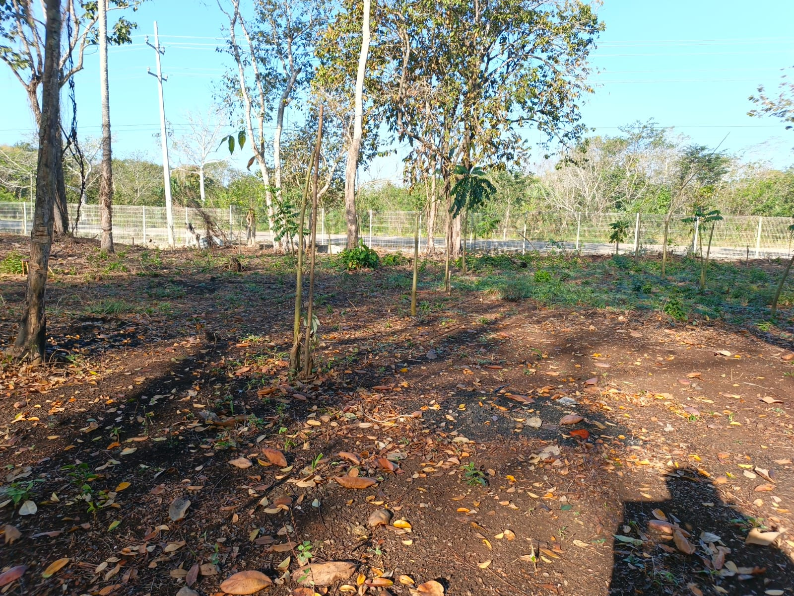

La milpa maya es un sistema tradicional de cultivo donde se siembran juntos maíz, frijol y calabaza, ayudándose entre sí para crecer de forma natural.
Su intención es producir alimentos de manera sostenible, cuidar la naturaleza y conservar las tradiciones mayas.
📄 Ver presentación